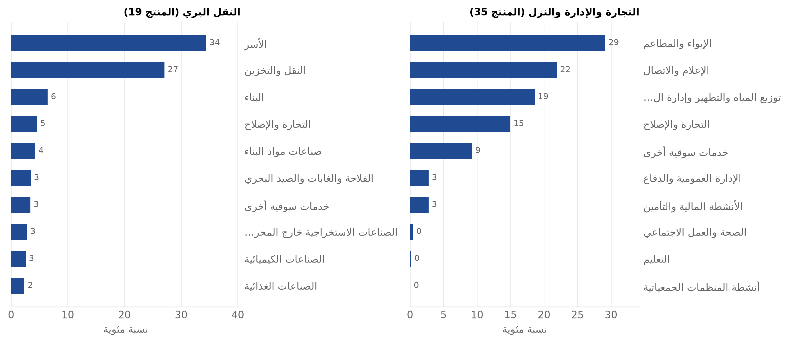

محتوى هذا العرض
- أسطر حسابات الطاقة وأعمدتها: المنتجات والتدفقات والأنشطة.
- كيف يجد كل سطر من الميزان فرعه، والسطران اللذان يحتاجان إلى مفاتيح.
- مصفوفة التوافق، وما تفعله الأداة بها.
من أسطر الميزان إلى فروع الحسابات القومية
| منتج الميزان | التسمية في الميزان | منتج نموذج الوكالة |
|---|---|---|
| النفط الخام | Pétrole brut | Crude oil |
| سوائل الغاز الطبيعي | Liquides de gaz naturel | Natural gas liquids |
| غاز المصافي | Gaz de raffinerie | Refinery gas |
| غاز النفط المسال | GPL | Liquefied petroleum gases (LPG) |
| البنزين | Essences | Motor gasoline excl. biofuels |
| الكيروسين | Pétrole lampant | Other kerosene |
| وقود الطائرات | Carburéacteurs | Kerosene type jet fuel excl. biofuels |
| النافتا | Naphta | Naphtha |
| الغازوال | Gasoil | Gas/diesel oil excl. biofuels |
| زيت الوقود الثقيل | Fioul lourd | Fuel oil |
| فحم الكوك البترولي | Coke de pétrole | Petroleum coke |
| منتجات نفطية أخرى | Autres produits pétroliers | Other oil products |
| التدفق | المنتج | الوجهة |
|---|---|---|
| BUNKERS | JETFUEL | International aviation bunkers |
| TRF_PROD | WIND | Main activity producer electricity plants (transf.) |
| TRF_PROD | SOLARPV | Main activity producer electricity plants (transf.) |
| TRF_PROD | HYDRO | Main activity producer electricity plants (transf.) |
| TRF_PROD | ELEC | Main activity producer electricity plants (transf.) |
| TO_CHARCOAL | BIOMASS | Charcoal |
| تدفق الميزان | الفرع | التسمية |
|---|---|---|
| Oil refineries (transf.) | 19 | تكرير النفط |
| Charcoal production plants (transf.) | 01 | الفلاحة والغابات والصيد البحري |
| Iron and steel | 24 | الصناعات الميكانيكية والكهربائية |
| Chemical and petrochemical | 20 | الصناعات الكيميائية |
| Non-metallic minerals | 23 | صناعات مواد البناء |
| Rail | 49 | النقل والتخزين |
| Residential | HH | الأسر |

لكل تدفق ومنتج في الميزان:
| التدفق | الافتراضي | تونس | الفروع |
|---|---|---|---|
| Production | D | HH | HH |
| Production | D | C | 20 |
| Autoproducer electricity plants (transf.) | D | C | 20 |
| Charcoal production plants (transf.) | C | A | 01 |
| Road | H | A, B, C, E, F, H, HH, Other | 01, 06, 07, 10, 13, 20, 23, 24, 16, 36, 41, 45, 49, 55, 60, 64, 84, 85, 86, 77, 97, 94, HH |
| Commercial and public services | Other | E, Other | 36, 45, 55, 60, 64, 77, 84, 85, 86, 94, 97 |
| Non-energy use industry/transformation/energy | C | F | 41 |
ينتقل 6 تدفقات إلى باب آخر، ولا تكسب البقية إلا تفصيلًا.
حسابات الطاقة والانبعاثات في تونس